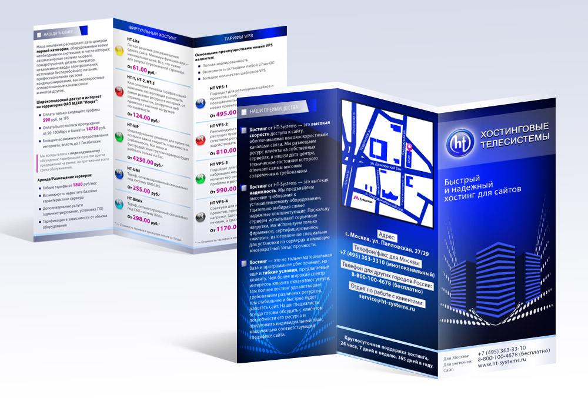

Добро пожаловать!
Буклеты являются эффективным инструментом маркетинга и информирования. В этом руководстве вы узнаете всё о создании буклетов с помощью Microsoft Publisher.

Что вы найдете на этом сайте:
Конструкция буклетов - Изучите основные элементы и структуру буклетов
Классификация и виды - Узнайте о различных типах буклетов и их применении
Критерии буклетов - Ознакомьтесь с основными критериями эффективных буклетов
Инструкция по созданию - Пошаговое руководство по созданию буклетов в MS Publisher